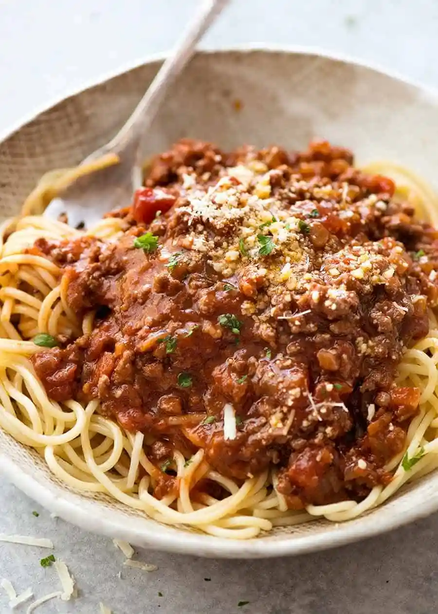

Spaghetti Bolognese

Ingredients:
- Tomato base
- Ground beef
-
Onion: Sliced onions give sweetness to the dish and are a perfect
pair with tender beef.
- Sugar
- Spaghetti
- Water
- Salt
- Cheese
- Parsley
- Cut the onion, green onions, and tear apart beef.
-
Cook Spaghetti in a pan with water per the packet instructions or
until al-dente. Add salt to the water, make it as salty as the sea
-
When spaghetti is cooked, dry the spaghetti, but reserve some pasta
water for the sauce
-
Make the sauce by heating oil and cook the onions with the beef.
After you smell the onions and the beef are done, add the tomato
base and add the pasta water to the sauce. Make sure the sauce is
not thick or runny at the same time.
- Add spaghetti back into the pan and mix.
- Serve in a plate and garnsih with cheese and parsley
Tips
-
Make sure to get good quality pasta. You can usually see the grains
or bumps on the pasta if they are good quality
-
Use good quality beef. Well-marbled beef will never become chewy
after being simmered in the sauce. For well-marbled beef, it's
easier to flash freeze and cut the semi-frozen meat.
-
The pasta water is a tip you should use in every pasta dish, it
makes use of the excess starch and makes the sauce less thick.
Sitemap